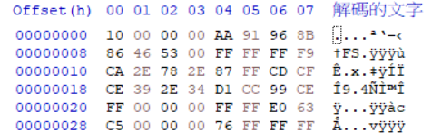
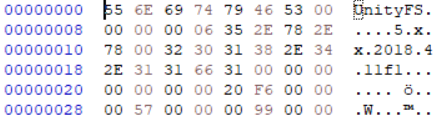
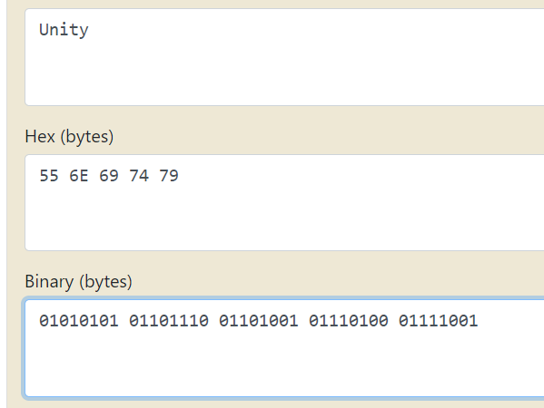
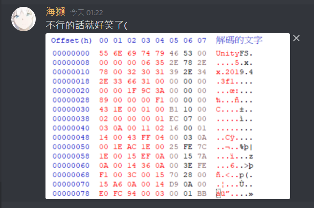
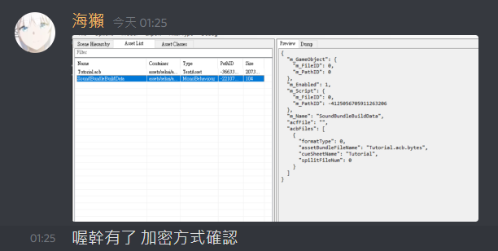
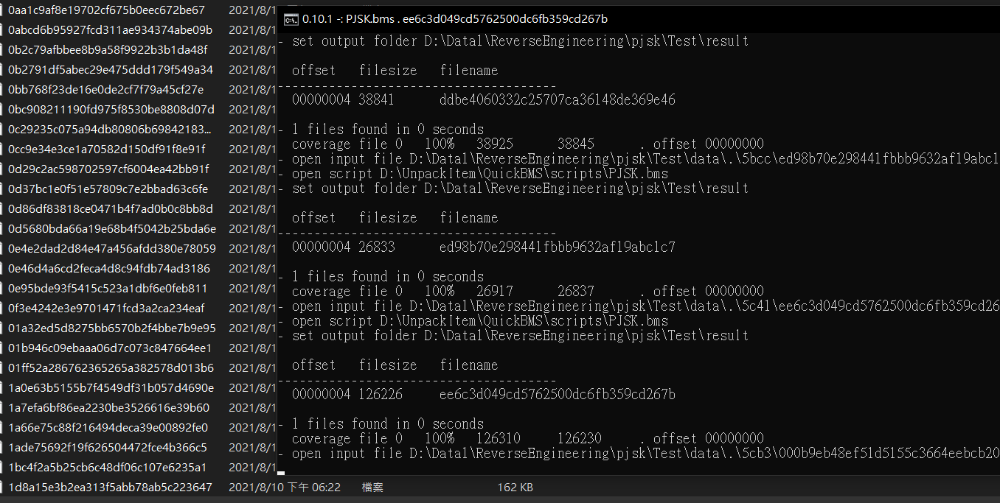
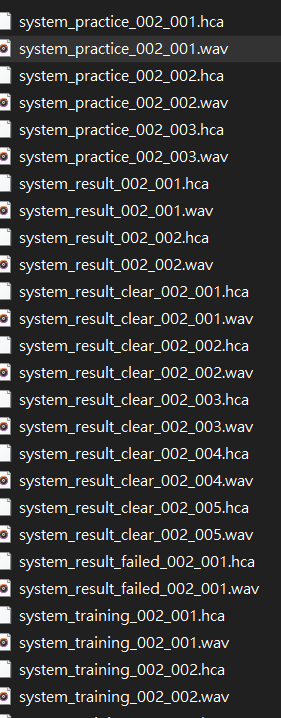

{% extends "base.html" %}
{% block title %}PJSK初次拆包{% endblock %}
{% block main %}
MLTD拆包拆了一段時間，還真的扛不住了，想說轉移跑道拆別的，就跑去PJSK了，
結果找了找，果然有人拆過放教學了，那我就來分享一下這次拆包的經歷好了。(感謝黑鯨大大提供的資料，下面腳本的部分有連結，可以去參觀一下)
前製作業就不說了，反正安裝遊戲>下載全部遊戲檔案>然後把Data的東西全部弄出來
甚麼的再簡單不過了(你還不是全講了)，重點在接下來，丟進Assets Studio才發現甚麼
都沒有，隨便找了個檔案打開，挖靠這是甚麼阿，標頭都不對了。

草，這怎麼看都有問題。
趕快找一個之前拆過的MLTD檔案來看看。

其實就可以發現了，前面有四個混淆字元，刪除即可，重點是Unity字樣的部分，
字元量相同，可是資料的值不對，太神奇了，反正就是要找到美妙的規律就對了，
反正就先走二進制reverse吧，直接弄成二進制，然後0轉1、1轉0，再丟線上轉換器。

喔草，就這樣喔...
改完後無情丟Assets Studio，果然，還是不行。當然沒那簡單，
走投無路的同時看到了黑鯨大大的文章，因為Unity之後是正確的字元，所以判斷是只取
前面四組字元做反轉，問題是，範圍呢?黑鯨大大的文章提到，前128組字元，作為資料流的
開頭這樣的範圍也算是合理的，所以我就整個手改了一次...

不行的話真的滿好笑的(((
然後呢，就可以了(((((

然後一個一個改真的會死人，所以我整理了黑鯨大大的文章，利用QuickBMS腳本的方式快速產出資料，首先下載QuickBMS，然後在scripts資料夾中放入
黑鯨
大大撰寫的腳本(他文章寫的腳本有問題，請參考留言區的)，直接複製到記事本更改副檔名為bms就好了。然後開啟cmd，一氣呵成的輸入"QuickBMS的位置 腳本的位置 檔案的位置 輸出的位置"(記得要輸入絕對路徑)，
enter就可以慢慢等了。(檔案有6000個左右吧，至少比某公主連結好多了，放了3小時都還沒傳輸完成(O)

接著我就繼續看文章，發現音檔有所謂的三層加密，這麼懶的我怎麼可能會去做呢，想當然爾，我直接就用老方法了，結果...竟然就這樣拆出來??而且可以聽，真的不胡扯。

恩，幹的好craft egg，老方法可以看我的這篇->
MLTD 3D模組MMD教學
然後教授交代的東西還是沒做出來，專題繼續海放，我真的需要分子來傳授我MLTD密鑰拆取QQ。
by.SeaotterMS on 2021/8/10
{% endblock %}